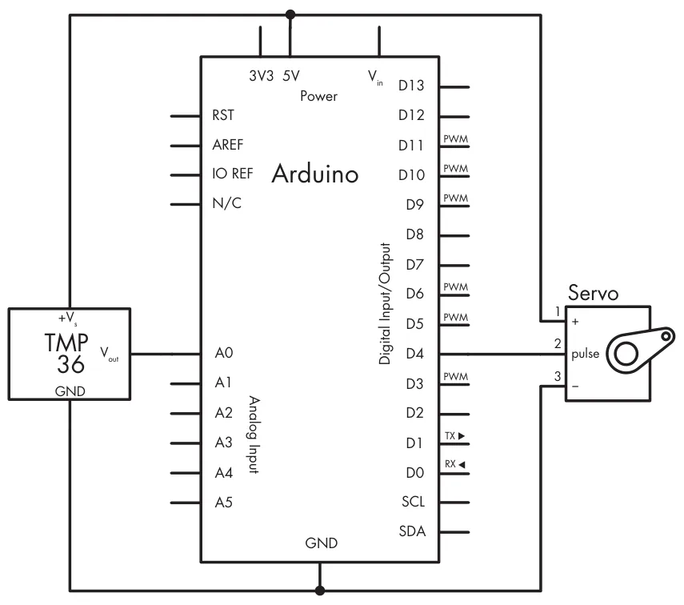
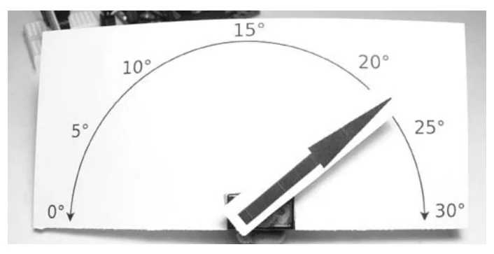

Using our servo and the TMP36 temperature sensor from earlier chapters, we’ll build an analog thermometer. We’ll measure the temperature and then convert this measurement to an angle between 0 and 180 degrees to indicate a temperature between 0 and 30 degrees Celsius. The servo will rotate to the angle that matches the current temperature.
The Hardware
The required hardware is minimal:
- One TMP36 temperature sensor
- One breadboard
- One small servo
- Various connecting wires
- Arduino and USB cable
The Schematic
The circuit is also very simple, as shown in Figure 12-3.

The Sketch
The sketch will determine the temperature using the same method used in Project 8. Then it will convert the temperature into an angular rotation value for the servo.
Enter and upload the following sketch:
// Project 38 - Building an Analog Thermometer
float voltage = 0;
float sensor = 0;
float currentC = 0;
int angle = 0;
#include <Servo.h>
Servo myservo;
void setup()
{
myservo.attach(4);
}
int calculateservo(float temperature)
{
float resulta;
int resultb;
resulta = -6 * temperature;
resulta = resulta + 180;
resultb = int(resulta);
return resultb;
}
void loop()
{
// read current temperature
sensor = analogRead(0);
voltage = (sensor*5000)/1024;
voltage = voltage-500;
currentC = voltage/10;
// display current temperature on servo
angle = calculateservo(currentC);
// convert temperature to a servo position
if (angle>=0 && angle <=30)
{
myservo.write(angle); // set servo to temperature
delay(1000);
}
}Most of this sketch should be clear to you at this point, but the function calculateservo() is new. This function converts the temperature into the matching angle for the servo to use according to the following formula:
angle = (–6 × temperature) + 180
You might find it useful to make a backing sheet to show the range of temperatures that the servo will display, with a small arrow to create a realistic effect. An example backing sheet is shown in Figure 12-4.
